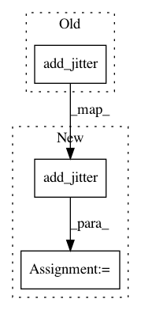

05372fc59dcc73817a75ec3b6e37c72689d2600a,gpytorch/inference/posterior_models/variational_gp_posterior.py,_VariationalGPPosterior,forward,#_VariationalGPPosterior#,56
Before Change
return f_posterior
else:
gpytorch.add_jitter(full_covar)
f_prior = GaussianRandomVariable(full_mean, full_covar)
return f_prior
After Change
return f_posterior
else:
full_covar = gpytorch.add_jitter(full_covar)
f_prior = GaussianRandomVariable(full_mean, full_covar)
return f_prior
In pattern: SUPERPATTERN
Frequency: 4
Non-data size: 3
Instances
Project Name: cornellius-gp/gpytorch
Commit Name: 05372fc59dcc73817a75ec3b6e37c72689d2600a
Time: 2017-08-18
Author: gpleiss@gmail.com
File Name: gpytorch/inference/posterior_models/variational_gp_posterior.py
Class Name: _VariationalGPPosterior
Method Name: forward
Project Name: cornellius-gp/gpytorch
Commit Name: 05372fc59dcc73817a75ec3b6e37c72689d2600a
Time: 2017-08-18
Author: gpleiss@gmail.com
File Name: gpytorch/__init__.py
Class Name:
Method Name: _variational_predict
Project Name: cornellius-gp/gpytorch
Commit Name: 05372fc59dcc73817a75ec3b6e37c72689d2600a
Time: 2017-08-18
Author: gpleiss@gmail.com
File Name: gpytorch/inference/posterior_models/variational_gp_posterior.py
Class Name: _VariationalGPPosterior
Method Name: marginal_log_likelihood
Project Name: cornellius-gp/gpytorch
Commit Name: 4712923043ccd23b746b6272fb9aa6f37b212dfa
Time: 2019-01-29
Author: jrg365@cornell.edu
File Name: gpytorch/kernels/inducing_point_kernel.py
Class Name: InducingPointKernel
Method Name: _inducing_inv_root